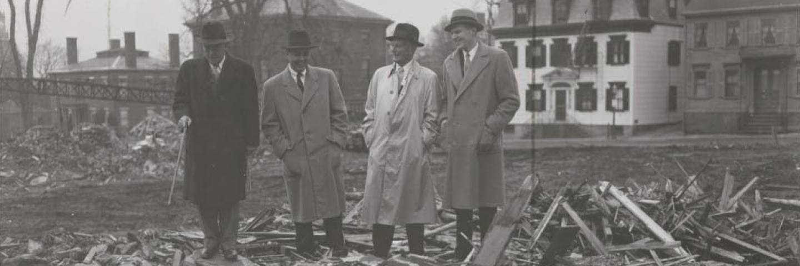

Inequality on the East Side: Walking on College Hill
Contextualizing Brown on the East Side
This virtual walking tour is meant to convey a number of things. First, it calls attention to how the expansion of the physical footprint of Brown has affected the communities which live on the East Side. The growth of the student population and the establishment of new residential complexes have displaced many families and communities on the East Side, and caused property values to soar.
Second, this tour recounts the stories behind a number of sites on which Brown has built university buildings. When Brown purchased these plots during its rapid period of expansion in the mid-twentieth century, it did so regardless of the previous occupants of the site, and in the years since has shown little interest in telling those histories.
Lastly, this tour will discuss communities on the East Side who have lived and thrived despite Brown, and engaged in ongoing negotiations with the University.

Neighboring Brown
The most obvious impact of Brown on the East Side is visible simply through the physical size of the university. Brown was not always this large; University Hall was the only physical marker of Brown for the first fifty years of its existence. It was not until the middle of the twentieth century that Brown began to accelerate its expansion into the surrounding neighborhood.
Construction on Wriston Quad began in 1950, and began with the destruction of a whole city block and the demolition of fifty one historic houses. Construction of Keeney Quad began later in the decade. The university offered to sell the historic homes on the site for one dollar, without highlighting that buyers would have to pay between $30,000 and $40,000 to relocate their homes.
In response, East Side residents protested and wrote petitions to the university, and subsequently founded the Providence Preservation Society. The relationship between Brown and the East Side remains contentious: the construction of the new Brook Street dorms has been met with consistent neighborhood push back, and the enforcement of a zoning ordinance which prevents the housing of more than three unrelated people in one housing unit is a concern of Providence's mayor-elect Brett Smiley.
A 1989 poll from the Brown Daily Herald demonstrates level of concern among students about Brown's impact on the character of the East Side
Infrastructure on the East Side
The East Side Bus Tunnel, which runs underneath College Hill and opens onto Thayer Street, helped change the nature of the East Side during the first decades of the twentieth century. The tunnel opened in 1914 to trolley service, and was converted to serve buses in 1948. At the moment when the tunnel opened, New England was becoming more interconnected than ever through new infrastructure projects. A magazine from 1915 touted the economic benefits of these new projects and noted that the area was "more closely interwoven with splendid highways than any other portion of the Western Hemisphere."
During the course of construction, engineers were careful to preserve the Waterman Building, which housed the Rhode Island School of Design and was located directly above the tunnel's entrance on North Main Street. Twentieth century infrastructure projects had the capacity to preserve the existing structures; it was more a matter of whether project managers were interested in listening to the current occupants.
When the tunnel opened, it represented a broader moment of change in the East Side, from a period at the end of the nineteenth century when working class immigrants dominated East Side neighborhoods in relatively self-contained communities, to an era in which the movement of wealthy downtown residents threatened the autonomy of these immigrant groups.
Worship on the Hill
At the intersection of Meeting Street and the walkway which runs parallel between Brown and Thayer Street is a small plaque which comes up to around ankle height. The text on the plaque commemorates the site of the Bethel A.M.E. (African Methodist Episcopal) Church, which traces its history back to the founding in 1795 of the African Freedmen's Society in Rhode Island.
The church stood at 193 Meeting Street for almost a hundred years and served as a stop on the Underground Railroad. In 1961, Brown purchased the land on which the church stood and demolished the building. For over three decades there was no physical marker of this site whatsoever, until this small memorial was installed in 1995.
The congregation bought a new building on Rochambeau Avenue where it stands still. To celebrate the 200th anniversary of the church in 1995, the congregation adopted "From Slavery to Freedom and Still Pressing On" as its motto.
A map from 1875 which depicts the site of the church on Meeting Street
The Asylum Under an Athletics Complex
On the site where Brown's athletics complex now stands was once Dexter Asylum, one of the "poor farms" which were one form of poor relief during the nineteenth century. These poor farms attempted to address the problem of urban poverty through the isolation of paupers into reform institutions.
At Dexter Asylum, an eight foot wall separated the residents from the rest of the East Side. They worked on the property's farm and received "moral instruction." The terminology "asylum" reflected how poverty was pathologized in cities, imagined as a kind of illness which accounted for the "unwillingness" of poor people to work to support themselves.
Dexter Asylum operated for 130 years, until 1958, when Brown bought the property at auction. The fields on which residents of Dexter Asylum had once grown vegetables are now sporting fields, with no plaque to mark what was once here. The massive wall which isolated the inmates of the asylum still remains on Angell Street.
The stone wall of Dexter Asylum as it still stands on Angell Street
Immigrants on the Waterfront
Like many cities in the Northeast, Providence has been home to many immigrant communities. For much of its history, Rhode Island has been the most Catholic state in the union, and there are prominent Italian and Irish enclaves throughout the city. Beginning in the latter half of the nineteenth century, a Cape Verdean community formed in Providence, as immigrants from the Portuguese colony off the coast of West Africa arrived in Fox Point. They worked in various occupations, especially as sailors, dockworkers, and longshoremen in the Providence harbor.
The first Cape Verdean settlement was in tenement homes on "Chickenfoot alley," a street which ran between James and Transit street. In Fox Point's Cape Verdean enclave, residences supported newly arrived immigrants and formed mutual aid networks. They frequented places like What Cheer Hall on North Main Street, and sent their children to the Providence Boys' Club.
However, as new infrastructure projects like the East Side Bus Tunnel and 1-95 changed the landscape of the neighborhood, and Brown and its student population continued to expand farther into Fox Point, many Cape Verdean residents were displaced and moved out of Providence, settling in other Rhode Island cities.
A map from 1899 which shows the area of Chickenfoot alley along Benefit St
Heritage at Louis Restaurant
Louis Restaurant, which is older than almost anyone currently affiliated with Brown, has occupied the same Brook Street address since 1946, when it was founded by Dominic and Loui Gianfrancesco. The restaurant is still family-owned, now run by Loui's son, John. Its walls serve as a scrapbook of memories, with ephemera from its 75 years of business plastered on every wall.
Many Brown students consider Louis to be a staple of campus life, and the restaurant appreciates its close ties with the university as well. However, this does not mean that relations between Loui’s and Brown have always been amicable. Over the past several decades, Brown has coveted the land on which the restaurant stands and has on multiple occasions attempted to buy up the area and demolish the restaurant to make way for new university buildings.